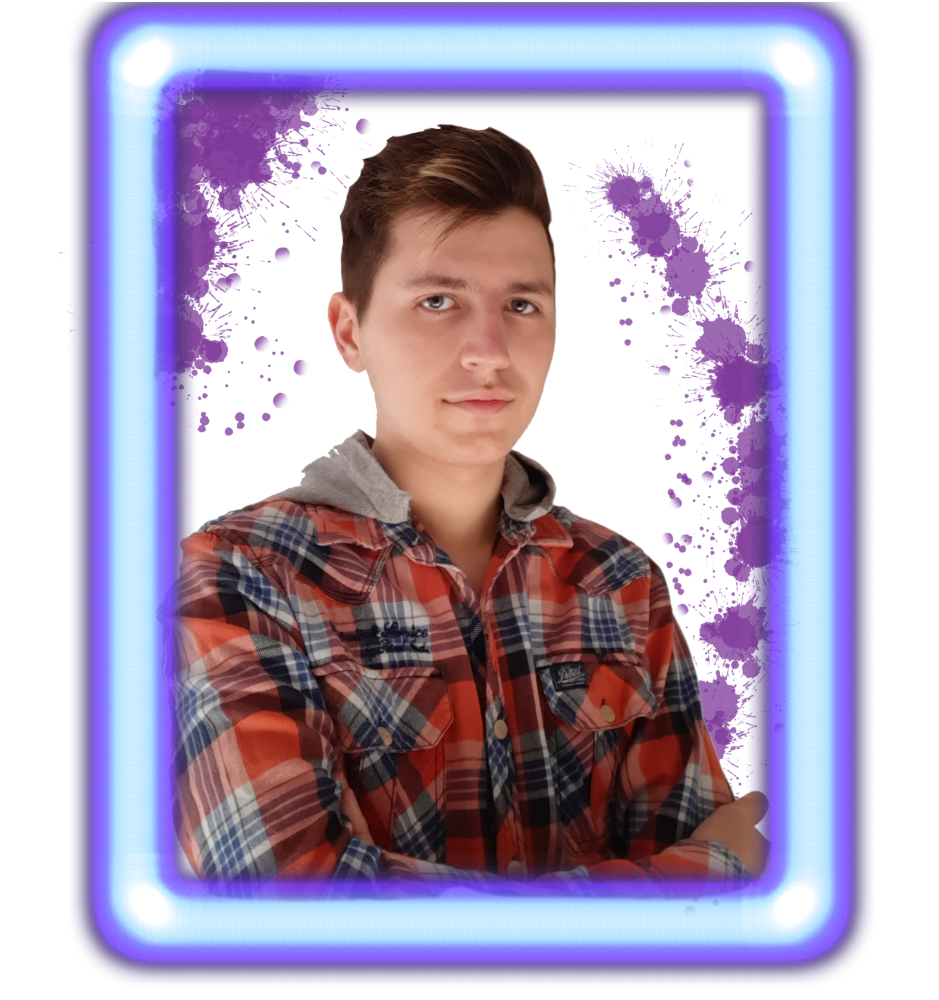

Sobre Mi
He ido aprendiendo todo lo que se gracias a las redes sociales y a otras personas ya que voy cogiendo ideas y formas de ir mejorando.
Gracias a este hobbie, puedo apreciar el mundo con tranquilidad y mejores ojos ya que cuando me pongo a trastear escucho música la cual te hace relajarte.
Hay algunos programas que utilizo y que he tenido que aprender a utilizar por lo que aun me pueden faltar cosas por aprender, pero ya tengo agilidad.
Programas que manejo